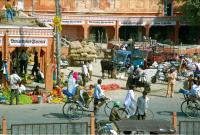
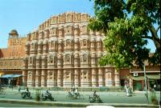

|
Mercredi 21 fevrier.
Après 5 heures de bus plutôt tranquille, on est à Jaïpur, 256 kms au Sud Ouest
de Delhi. Sur la route, le paysage passe de verdoyant à sec, et les dromadaires
deviennent plus fréquents que les chevaux comme bêtes de trait. On voit des
buffles, dromadaires, et vaches devant les maisons avec les cochons, chèvres
et moutons. On s'est trouvé une chambre simple mais propre avec les toilettes
et douche à l'extérieur. Eau froide uniquement. Mais alors dans quel cadre!
Un ancien palais transformé en hôtel où de petits bâtiments entourent une grande
pelouse où l'on peut se reposer dans les transats. Et le tout pour 175 roupies
(moins de 30 FF). Le Diggi palace qu'il s'appelle.
On profite de notre superbe palais! Transats sur une superbe et immense pelouse
verte. Super dinner: soupe tomates et légumes, lentilles (dahl) pour Lionel,
et Thali pour moi. Super bon, pas trop épicé. Le Thali est un plat indien hyper
copieux servi dans une énorme assiette en fer ronde, à compartiments. Il comporte:
riz, épinards, légumes (genre de ratatouille), carottes et concombres crus,
lentilles, yaourt hyper bon, seul chose non epicée.
Jeudi 22 Février
Ce matin, lavage de culottes, douche froide très agréable, ça rafraîchit car
ici on est plutôt vers 28, 30 degrés, je crois. Et départ pour le centre ville
de la " pink city ", la ville rose, l'ancienne Jaïpur emprisonnée par les remparts.
Ici plus qu'ailleurs, la fourmilière grouille et le bruit est terrible. On a
du mal à marcher de front alors on se suit. De toute façon, on ne peut pas se
parler tellement le vacarme est assourdissant. Par contre, il y a peu de voiture.
Les vélos, moto et mobylettes, charrettes à bras, chevaux, grandes vaches, dromadaires,
vélos et rickshaws et piétons les remplacent. Tout ce monde tournoie sans arrêt,
se souciant fort peu du code de la route et des gendarmes qui s'évertuent à
faire la circulation comme ils peuvent. Il faut dire que les vaches couchées
dans les ronds-points et les rues ne facilitent pas les choses. Nous passons
par le quartier des vendeurs de tissus et tailleurs, puis celui des tailleurs
de pierres, etc. Les spécialités se succèdent au rythme des ruelles. Partout,
le sol est jonché de détritus mais partout aussi, les gens se lavent, époussettent
leurs vélos, balaient leur échoppe de 3 m2. Chacun semble respecter une propreté
individuelle. Par contre, collectivement, c'est pas nickel du tout ! Mais à
part quand ça sent le pipi -certaines rues servent de WC publics- ça va. En
plus, les ordures ont le mérite de nourrir les chiens et les vaches (et aussi
les rats malheureusement)...
Visite du superbe palais des vents tout rose. En fait, c'est une façade extérieure
qui est chouette. Dedans, il y n'y a pas grand chose à faire à part profiter
de la vue surplombant la fourmilière. Ensuite, on part à Jantar Mantar, l'observatoire
astronomique édifié par Jai Singh II, créateur et roi de Jaipur. C'est un endroit
très amusant, il a fait des instruments de mesure géants afin d'obtenir des
mesures plus précises ! Pas bête ! Ainsi, pour donner l'heure par exemple, il
y a un cadran solaire géant sur lequel on peut monter grâce à un escalier de
20 mètres de haut environ. Bref, on dirait un immense parc d'attraction. Entre
temps, on a tout de même mangé deux bananes chacun en guise de petit déj' et
ensuite coca et samosa pour moi, rien pour Lionel qui se méfie de son estomac
(lequel grogne beaucoup) comme déjeuner. Faut faire attention, on a tendance
à oublier de manger. En fait, il n'y a rien de super appétissant ici, donc ça
ne donne pas envie de manger, c'est très différent de la Jordanie. Le samosa,
c'est un genre de beignet fourré aux pommes de terre et légumes. Ca s'achète
dans la rue aux petits marchands et j'adore ça ! C'est un peu épicé. L'autre
gros contraste avec la Jordanie, c'est le tempérament des indiens. Ils ne sont
pas blagueurs et prêts à rire comme les Jordaniens à la moindre occasion. Ils
sont plutôt sérieux et parfois même agressifs envers nous (" achète-moi ça !
Pourquoi tu ne me donnes pas 10 roupies ?) C'est moins reposant, mais bon, c'est
un caractère forgé par les dures conditions de vie ici…
Ce qui est poilant avec les Indiens, c'est leur curiosité. A l'instant, une
fillette s'est penchée au-dessus d'une barrière. Immédiatement un garde a crié
et a couru pour la sauver (ça fait quand même 1 mètre de haut et la fillette
a bien 6 ou 7 ans!). Bon réflexe. En même temps, les 50 indiens des 20 mètres
alentours en ont fait autant et chacun s'est intéressé à " l'affaire ". Faut
dire qu'il avait le temps d'observer, ce gardien. A l'entrée de l'observatoire,
il y a au moins 5 ou 6 gardiens pour surveiller et contrôler les billets. Dont
un gars avec une cravate, ça doit être le chef. En vérité, il y en a un qui
déchire les billets et les autres qui glandent à fond, assis sur un banc. Autre
exemple de la curiosité des Indiens, dans le train de Delhi à Agra, il y a eu
une histoire entre un militaire et un indien. Tout le wagon a tendu l'oreille
et 5 minutes après, ils étaient tous debouts, agglutinés autour des 2 héros
de l'histoire! Allez, encore une petite: dans Old-Delhi, on s'était mal compris
avec le vélo-rickshaw, et au moment de payer, on lui file 20 roupies au lieu
des 14 négociées, plutôt heureux de lui faire cette rallonge. Mais il nous en
demande encore (par geste, il ne parle pas anglais et nous pas hindi). Immédiatement,
un attroupement s'est formé autour de nous! En fait, l'Inde, c'est comme une
immense fourmilière, toujours en mouvement. Sans arrêt des gens marchent, se
déplacent, c'est un flux continu. Mais dès qu'un truc se passe, ils sont tous
disponibles pour le potin. On est resté à l'observatoire au moins deux heures.
Une demi-heure pour visiter le site, le reste du temps à glander assis sous
un arbre à observer les gens. C'est là qu'on voit des trucs en Inde, pas quand
tu courres de monuments en monuments.
Vendredi 23 février
C'est mon anniversaire. Bienvenue au club des trentenaires m'avait dit avec
quelques jours d'avance Anne-Sophie. Ca y est c'est fait. Pour fêter cela, on
va visiter le Fort d'Ambert à 10 km de Jaïpur. Chouette, une sortie vieilles
pierres! Ce qu'il y a de bien avec Marion, c'est qu'elle me connait bien, elle
sait ce qui me fait plaisir. Aujourd'hui donc, visite du fort d'Ambert comme
joli cadeau d'anniversaire. Je sais, Lionel aurait préféré passer la journée
sur internet! On prend le bus en face du palais des vents. Pour cela, le trajet
à pied depuis notre palais, au milieu des odeurs d'urine, des poubelles, du
bruit, de la poussière, des pots d'échappements et surtout des plus demunis
habitants sur le trottoir dans la crasse et le bruit. On se sent tout penauds
avec nos jolis sacs à dos et nos lunettes de soleil chicos. C'est du bus que
l'on voit nos premiers éléphants. Certains sont hauts comme le bus. Plus loin,
en montant à pied au fort, on fait bien attention aux éléphants: on en a vu
un uriner et on voudrait éviter de se noyer!
Le fort est dans un beau style indien avec une superbe porte bien kitsch :
la Ganesh Pol. Il y a aussi une superbe salle aux murs recouverts de multiples
morceaux de miroirs. Bref, ca brille partout. Le plus amusant, ce sont les touristes
qui le photographient... au flash! Je doute qu'ils obtiennent grand chose! Lionel
s'éclate a observer les touristes japonais et indiens qui s'extasient devant
ces murs tout de même très kitsch, il faut le reconnaître. Puis,on se perd (ce
n'est pas une image) dans les labyrinthes du palais, passant de couloirs en
pente sombre à d'innombrable cours du premier au second étage, puis au rez-de-chaussée
sans croiser grand monde ni parvenir à trouver la sortie! Autour du fort, les
remparts courent sur la colline épousant leur forme. C'est chouette.
Pour fêter son anniversaire et se porter chance, Lionel a decidé de marcher
en sandales dans une bouse de vache. Pour se remettre, il a decidé de goûter
un samosa en guise de déjeuner, delicieux beignet formé de patates et petits
pois, légèrement epicé, en forme de gros berlingot et qui a le mérite de coûter
2 à 4 roupies. Le pompon de la fête: quelques heures dans les transats à siroter
du pepsi en mangeant des oranges. On n'a pas tous les jours 30 ans!
Depuis qu'on est en Inde, chaque fois qu'on va visiter un endroit comme le
Taj Mahal ou le Fort d'Ambert cet apèes-midi, il y a plein de touristes partout.
Des européens bien sûr, dont un bon nombre de francais, des asiatiques beaucoup.
Mais il y a en majorité des indiens. D'après ce que j'ai compris, avant en Inde
tu avais les très riches et les très pauvres. Les deux existent encore. Mais
il y a en plus depuis quelques années l'émergence d'une classe moyenne. Ils
ne sont ni riches ni pauvres. Ils voyagent beaucoup en Inde pendant leurs vacances.
Ils sont bien sapés, toute leur petite famille (si on peut dire petite avec
4 ou 5 enfants) est toute endimanchée. Ils possèdent une télévision, une voiture,
des appareils photo, des caméscopes, des montres et des bijoux.
Ce soir nous sommes toujours dans nos transats sur la pelouse. La nuit tombe
et nous admirons le ballet incertain des chauves souris.
Suite du voyage : Pushkar, au pays des baba cools
|
Inde
Jaipur
|

Inde
Jaipur
|
Inde
Jaipur
|
Inde
Jaipur
|

Inde
Jaipur
|
Inde
Jaipur
|

Inde
Jaipur
|
Inde
Jaipur
|
|
|